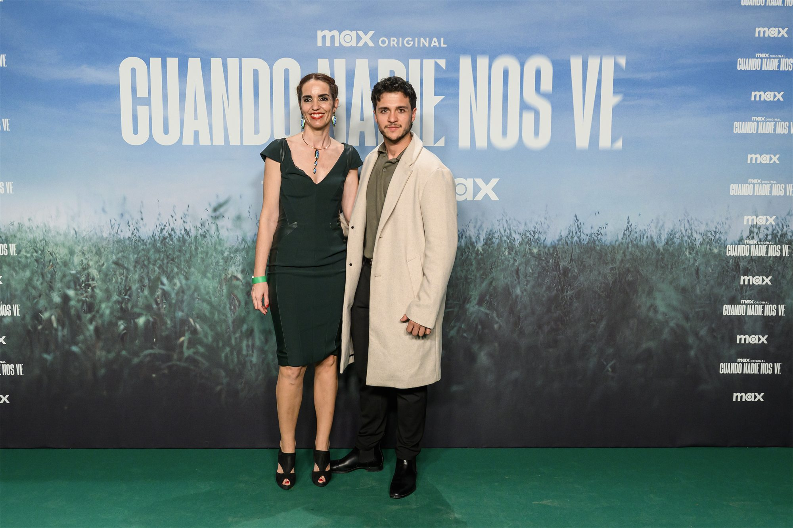
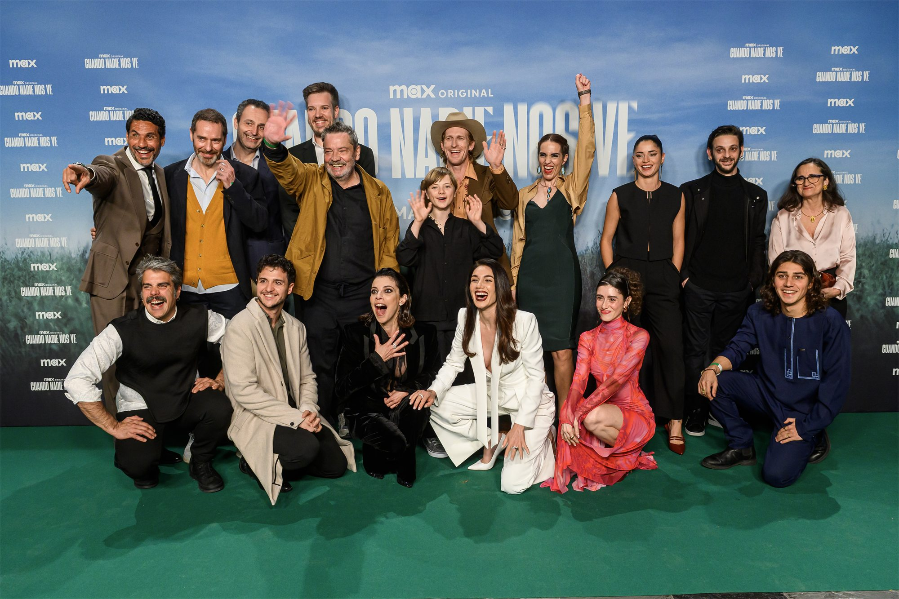
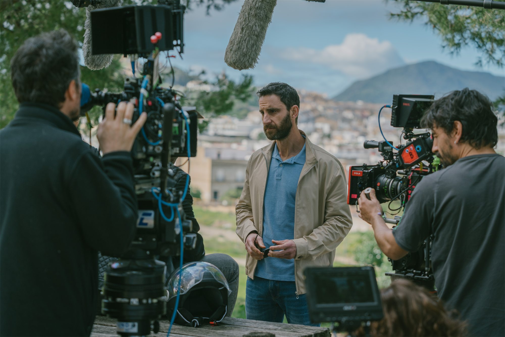

Saltar al contenido
DANI
TÉLLEZ
Filmografía
Book
Videobook
Prensa
Contacto
↗
Instagram
IMDb
Representación
04
En los medios
Prensa
01
Galería
Presentación y
rodaje



‹
›
02
Entrevistas
Dani Téllez
en los medios
17.04.2025 · FILMADOS
Dani Téllez presenta «Cuando Nadie Nos Ve»
Leer entrevista
↗
13.05.2025 · CRÓNICA NEGRA
Entrevista a Dani Téllez, protagonista de «Cuando nadie nos ve»
Leer entrevista
↗
×